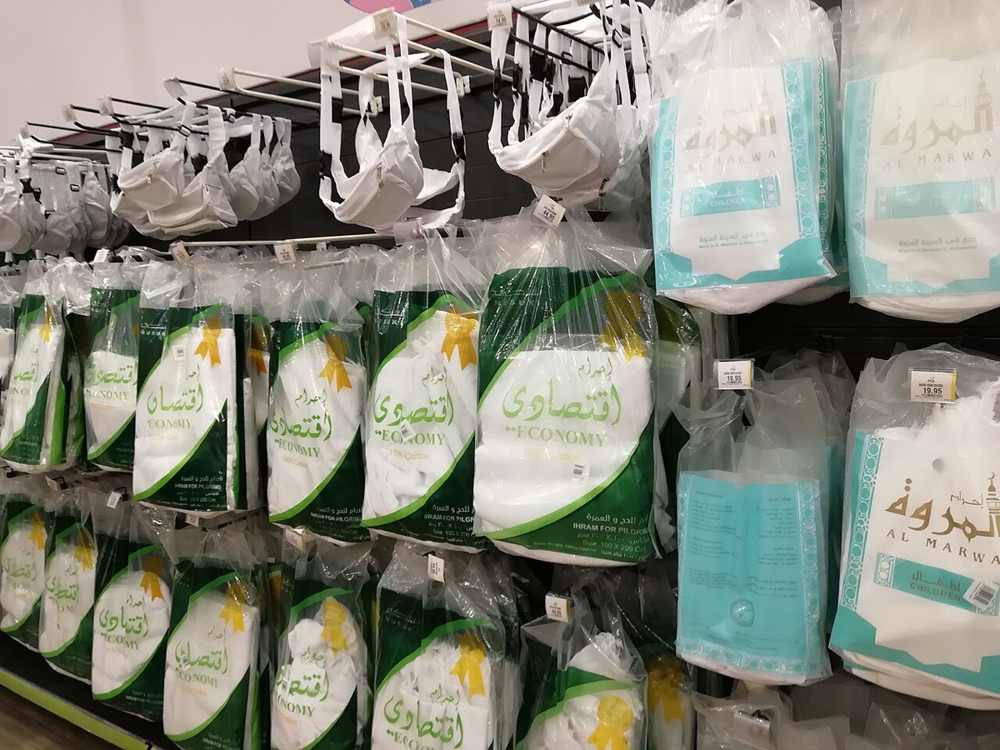
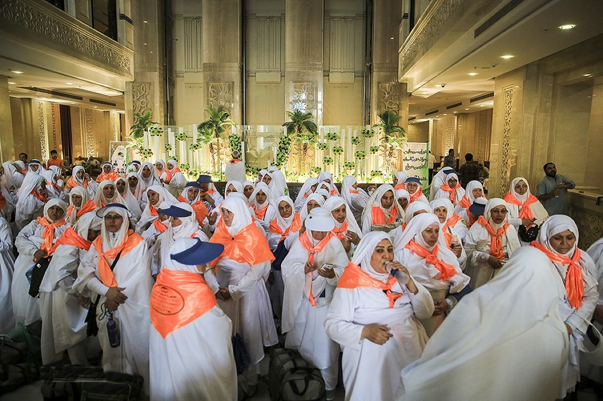
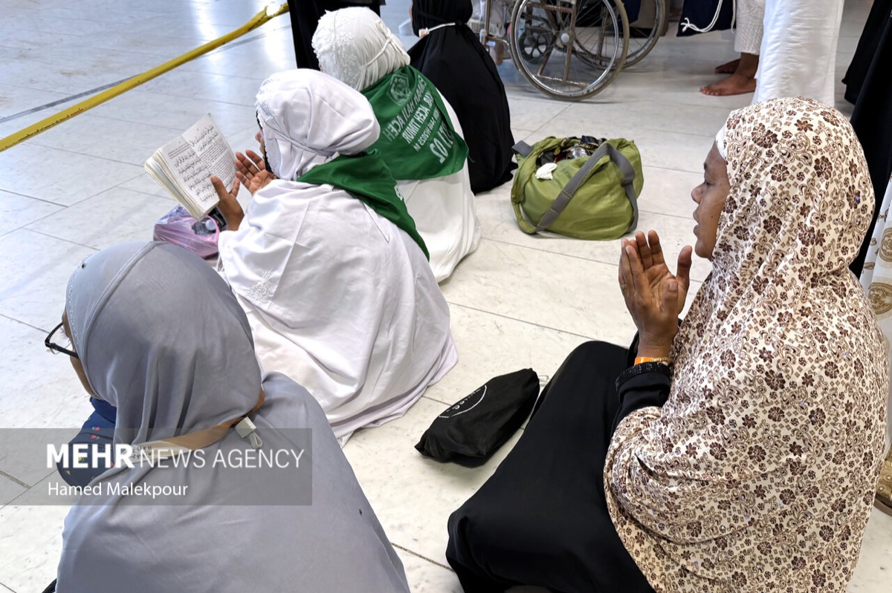

İhram
İhram, hac veya umre ibadetine özel bir niyetle girilen manevi haldir. Çoğu kişi ihramı sadece kıyafet sanır; halbuki ihram, davranışlara da sınır koyan ciddi bir ibadet bilincidir.
İhrama giren kişi bazı normal davranışlardan uzak durur, diline ve bedenine daha fazla dikkat eder. Bu sayfa ihramın anlamını, niyetini, kıyafet hükümlerini ve yasaklarını temel düzeyde anlatır.
İhram nedir, nasıl niyet edilir, erkek ve kadın ihramında nelere dikkat edilir, ihram yasakları nelerdir öğrenin.
A. İhramın Anlamı
İhram kelime olarak bazı şeyleri kendine haram kılmak anlamına gelir. Hac veya umre için ihrama giren kişi, ibadet tamamlanana kadar belirli yasaklara dikkat eder. Bu yasaklar kişiyi dünyevi alışkanlıklardan ayırır ve ibadete odaklar.
İhramın özü niyettir. Kıyafet bu niyetin dış görünüşüdür; asıl olan kişinin kalben hac veya umre ibadetine başlamasıdır. Bu yüzden ihrama girerken neye niyet edildiği bilinmelidir.
İhram, beyaz örtüden ibaret değildir; niyet, edep, sabır ve yasaklara dikkat etme halidir.
B. Erkekler İçin İhram Kıyafeti
Erkekler ihramda dikişli ve vücuda göre şekillendirilmiş normal kıyafet giymez. Genellikle izar ve rida denilen iki parça beyaz, dikişsiz örtü kullanılır. Baş açık olur; ayaklarda topuk ve üst kısmı açık bırakacak terlik tercih edilir.
İhram kıyafetinin temiz, sade ve mahremiyeti koruyacak şekilde bağlanması gerekir. Özellikle kalabalıkta açılmaması için önceden deneme yapmak faydalıdır.
- İki parça dikişsiz örtü kullanılır.
- Baş kapatılmaz.
- Uygun terlik seçilir.
- Kıyafet mahremiyeti koruyacak şekilde bağlanır.

C. Kadınlar İçin İhram
Kadınlar için ihram özel iki parçalı beyaz örtü zorunluluğu değildir. Kadınlar normal, sade, bol ve mahremiyeti örten kıyafetleriyle ihrama girebilir. Yüz ve ellerin hükmü konusunda mezhebi detaylar bulunabileceği için kişi güvenilir rehberlik almalıdır.
Kadınların ihramda dikkat edeceği asıl konu niyet ve yasaklardır. Kıyafet gösterişten uzak, rahat yürüyüşe uygun ve ibadet ortamına saygılı olmalıdır.


Kadınlar için ihram, özel bir üniforma değil; örtülü, sade ve ibadete uygun kıyafetle niyet halidir.
D. İhram Yasakları
İhrama giren kişi saç veya tırnak kesmek, koku sürmek, avlanmak, kavga etmek, kötü söz söylemek ve eşler arası bazı yakın davranışlardan uzak durmak gibi yasaklara dikkat eder. Erkekler için dikişli elbise ve baş örtme konusu ayrıca önemlidir.
Yasaklardan biri unutularak veya bilerek yapılırsa hüküm duruma göre değişebilir. Böyle bir durumda paniğe kapılmak yerine kafile görevlisine veya dini rehbere danışmak gerekir.
İhram yasaklarında hata yapılırsa kendi kendine karar vermek yerine görevliye danışılmalıdır. Bazı durumlarda ceza/fidye gerekebilir.
E. Telbiye Duası
İhrama giren kişi telbiye getirerek Allah’ın davetine icabet ettiğini dile getirir. Telbiye, hac yolculuğunun en güçlü manevi seslerinden biridir.
Telbiye okunurken anlamını düşünmek önemlidir: Kul, Allah’ın huzuruna geldiğini, O’nun ortağı olmadığını ve bütün hamdin O’na ait olduğunu ifade eder.
لَبَّيْكَ اللَّهُمَّ لَبَّيْكَ، لَبَّيْكَ لَا شَرِيكَ لَكَ لَبَّيْكَ، إِنَّ الْحَمْدَ وَالنِّعْمَةَ لَكَ وَالْمُلْكَ، لَا شَرِيكَ لَكَ
Lebbeyk Allahümme lebbeyk. Lebbeyke la şerike leke lebbeyk. İnnel hamde ven-ni'mete leke vel-mülk. La şerike lek.
Anlamı: Buyur Allah'ım buyur. Senin ortağın yoktur. Hamd, nimet ve mülk Sana aittir. Senin ortağın yoktur.F. İhramda En Çok Yapılan Hatalar
İhramda en çok yapılan hatalardan biri, ihramı sadece kıyafet olarak görmek ve davranış yasaklarını hafife almaktır. Oysa ihram, kişinin dilini, öfkesini, bedenini ve niyetini korumasını gerektirir.
Erkeklerde başı örtmek, dikişli kıyafet giymek, koku sürmek veya tırnak kesmek gibi konular karıştırılabilir. Kadınlarda ise özel beyaz kıyafet zorunlu sanılabilir. Hacı adayı ihrama girmeden önce kendi cinsiyeti ve hac türüne göre temel hükümleri net öğrenmelidir.
- Koku ve parfüm konusunda dikkatli olunmalı.
- Tıraş ve tırnak kesme ihramdan önce tamamlanmalı.
- İhram kıyafeti önceden denenmeli.
- Hata yapılırsa görevliye danışılmalı.
Hacipedia Detay Rehberi
İhram uygulamasında kıyafet, niyet ve yasaklar birlikte düşünülür. Erkek için iki parça örtü ve uygun terlik; kadın için sade, bol, mahremiyeti koruyan kıyafet; her iki taraf için de koku, tıraş ve davranış yasaklarına dikkat gerekir.
Bu başlıkta amaç yalnız “ne yapılır?” sorusunu cevaplamak değil, uygulamanın neden önemli olduğunu da göstermektir. Hacı adayı anlamı bildiğinde kalabalık, yorgunluk ve zaman baskısı içinde daha sakin hareket eder.
İhramlıyken normal alışkanlıkla parfüm sürmek, tırnak kesmek, saç koparmak veya tartışmaya girmek sık rastlanan hatalardandır.
Yola Çıkmadan Önce Kontrol
İhram konusunda en iyi hazırlık, kısa ve net bir kontrol listesiyle yapılır. Aşağıdaki maddeler yola çıkmadan veya ilgili ibadete başlamadan önce hızlıca gözden geçirilebilir.
- İhramdan önce tıraş ve temizlik tamamlandı mı?
- Koku/parfüm kullanılmadı mı?
- Niyet ve telbiye öğrenildi mi?
- Yasaklar kısa liste olarak biliniyor mu?
Bu sayfadaki bilgiler genel rehber niteliğindedir. Hac uygulamalarında kafile görevlilerinin, resmi duyuruların ve güvenilir dini danışmanlığın yönlendirmesi esas alınmalıdır.